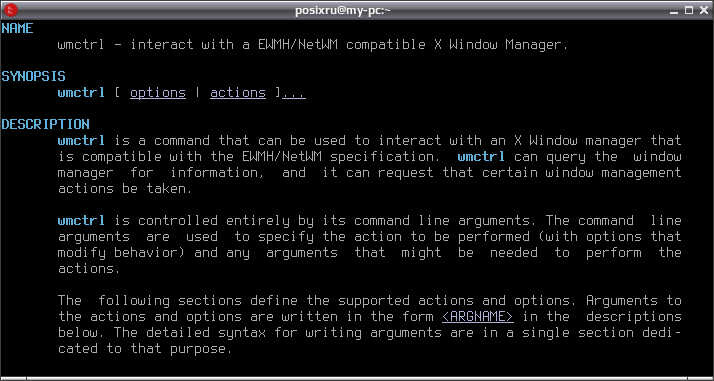
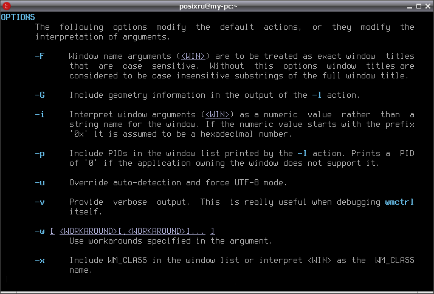
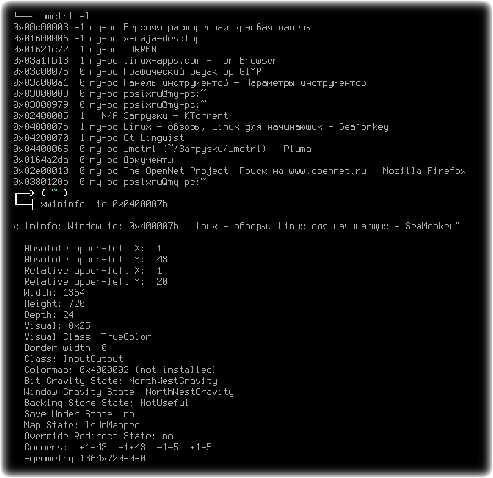
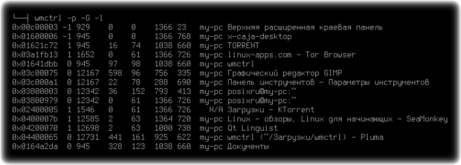
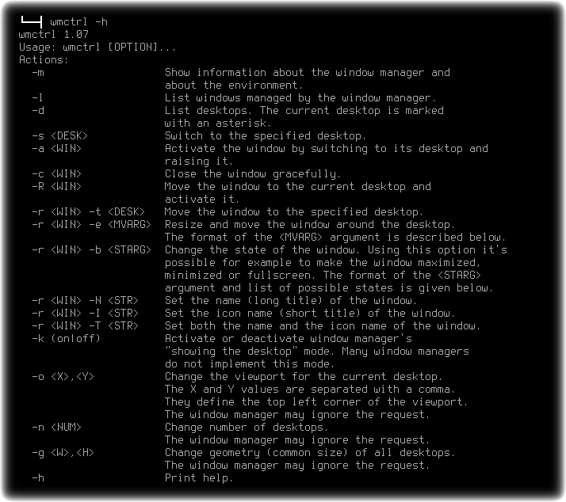
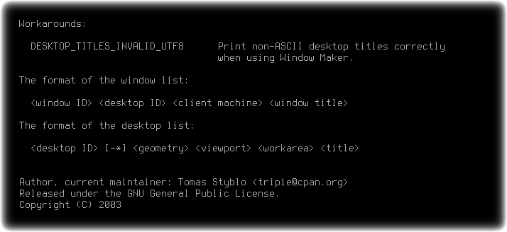
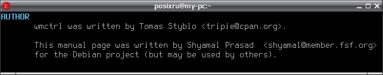

wmctrl
Системные утилиты, Hужное/полезноеПросмотров: 12876Комментарии: 215 апреля 2017 г.
Console / Автоматизация / Менеджер окон / Приятные мелочи / Простая утилита

wmctrl — маленькая консольная утилита для управления оконным менеджером из командной строки.

wmctrl обеспечивает простой доступ к большинству функций оконных менеджеров, тем функциям что доступны с помощью мыши и клавиатуры. Например можно изменять размер и перемещать окна, отображать выбранное окно на переднем плане или выбранном рабочем столе, делать окна "липкими", получать информацию об объектах и выполнять другие операции.

Например, для получения списка открытых окон используется команда:
wmctrl -l
Получить список открытых окон с отображением PID-процесса и информацией о размере окна:
wmctrl -p -G -l
Сделать активным окно в названии которого есть слово "Докум":
wmctrl -a Докум
Свернуть окно в названии которого есть слово 'caja':
wmctrl -r caja -b add,hidden
Закрыть окно по его имени:
wmctrl -F -c 'linux-apps.com - Tor Browser'
Изменить заголовок окна для окна выбранного курсором мыши:
wmctrl -r :SELECT: -T "Selected Window"
Развернуть окно со словом GIMP в заголовке на полный экран:
wmctrl -r "GIMP" -b toggle,fullscreen
Команда для перемещения указанного окна, с изменением его размера:
wmctrl -r <Имя_окна> -e G,X,Y,W,H
Где:
Например:
wmctrl -r Загрузки -e 0,1,1,700,700
Команда переместит окно файлового менеджера с открытым каталогом "Загрузки" в левый верхний угол, а размер окна станет 700x700 пикселей.

Обеспечиваемый wmctrl доступ к функциям управления окнами позволяет использовать утилиту для автоматизации выполнения заданных команд в ответ на события, встраивания в скрипты для интерактивного управления графическими окнами совместно с Zenity (GUI диалоги для скриптов) и пр...

wmctrl является NetWM / EWMH (Extended Window Manager Hints) совместимой, не требует наличия какого либо рабочего окружения и может использоваться с большинством оконных менеджеров (blackbox, icewm, kwin, metacity, openbox, fvwm, pekwm, enlightenment, fluxbox, sawfish, waimea, matchbox и пр...).

Лицензия: GNU General Public License version 2.0 (GPLv2)

Сделал из него bash-скрипт, который по имени активирует окно, если же таких окон несколько то переводит фокус между ними, если окон не нашел то выполняет команду которая вторым аргументом получена (например запустить прогу в терминале с таким-то заголовком). Ну и теперь между окнами гоняю по хоткеям.